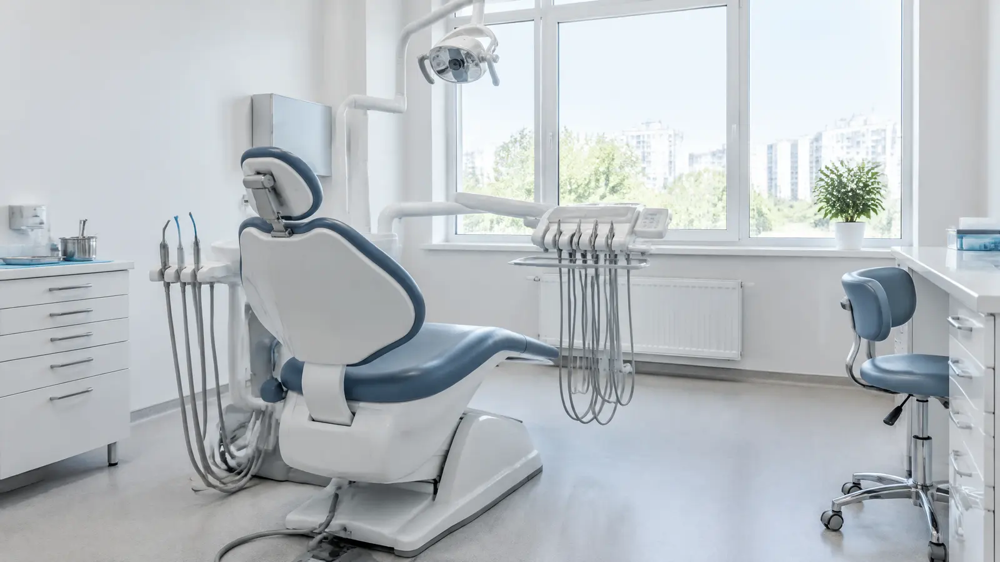

Если есть учётная запись на Госуслугах
Госуслуги
Запись к врачу по полису ОМС – себе или другому человеку, например ребёнку или родителям.
Колл-центр записи (3412) 314-497, с 8:00 до 14:00
Восемь подразделений в Ижевске и Сарапуле. Записаться можно через Госуслуги, региональный портал или регистратуру своего подразделения.
Три способа – выберите удобный. Повторные визиты назначает ваш врач.
Если есть учётная запись на Госуслугах
Запись к врачу по полису ОМС – себе или другому человеку, например ребёнку или родителям.
Если хотите выбрать врача и время
Видно свободное время каждого врача. Расписание загружается из федерального регистра медработников.
Если удобнее по телефону
Колл-центр (3412) 314-497 работает с 8:00 до 14:00. Телефон регистратуры – в списке подразделений ниже. Если занято, пожалуйста, перезвоните.
Поликлиника обслуживает прикреплённое население. Порядок записи и лист ожидания – в памятке для пациентов.
Врач с пометкой «Пародонтологический приём» лечит дёсны, а не зубы. Записываясь к врачу-стоматологу, уточните, какой приём он ведёт.
Статус «открыто» считается по ижевскому времени. В праздники режим другой – смотрите новости.
Сейчас все подразделения закрыты. Неотложная помощь взрослым – ул. Коммунаров, 231, вход с ул. Советской.
Бесплатная помощь – по программе госгарантий. Платные услуги – в отдельных кабинетах, по договору.

Для прикреплённого населения. Что входит и на каких условиях – по Программе государственных гарантий бесплатной медицинской помощи и территориальной программе Удмуртии.
Эстетические реставрации, виниры, имплантация, протезирование и исправление прикуса. Тарифы единые для всех, скидок и льгот нет. Можно оплатить безналично.
Всё о платных услугахРежим работы структурных подразделений в праздничные и выходные дни.
Режим работы структурных подразделений в праздничные и выходные дни.
Для врачей-стоматологов. Среди организаторов – Ижевский ГМУ.
Сначала – к заведующему отделением или главному врачу. Можно обратиться и в страховую компанию из вашего полиса ОМС.
Территориальный фонд ОМС Удмуртии
Министерство здравоохранения Удмуртии
По вопросам обезболивающей терапии
Росздравнадзор по Удмуртии
Здесь встаёт официальный виджет Госуслуг «Написать о проблеме» – тот же код, что на действующем сайте.